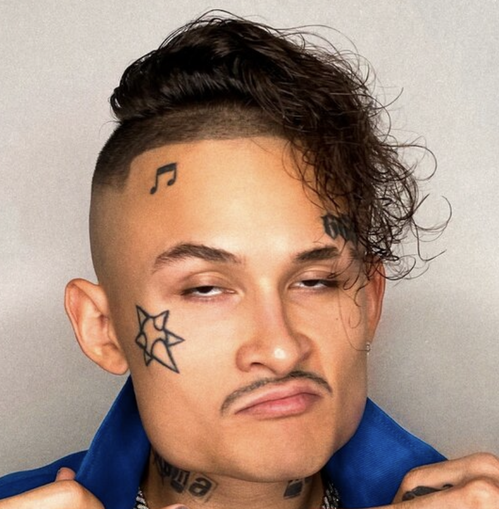

Главная

Белов Егор Андреевич
ЭФБО-05-24
Обо мне
Привет 👋, это я 🙋♀️, Майли 💁♀️. Ну если быть точной Дестини
Хоуп Сайрус так меня назвали при рождении 👶. Но для всего
мира 🌍 я просто Майли 💫. Моя жизнь всегда была похожа на
американские горки 🎢, полные ярких красок 🌈, громкой музыки
🎵 и постоянных изменений 🔄. Расскажу вам мою историю так как
я её помню и чувствую 💖.
Глава 1: Рождение в тени славы Я появилась на свет 💡 23
ноября 1992 года в Нэшвилле 🎸, Теннесси. Можно сказать что
музыка 🎶 и сцена 🎭 были моей судьбой с самого начала 🚦. Мой
папа 👨🦱 — Билли Рэй Сайрус чей хит «Achy Breaky Heart» гремел
на весь мир 🌎. Но расти в тени такой успеха было непросто 😔.
Я не хотела быть просто «дочкой Билли Рэя» 👧. Во мне всегда
горела своя собственная искра ✨. Свое имя Дестини Судьба я
сменила на Майли свое детское прозвище ещё в детстве это был
мой первый самостоятельный шаг 👣. С восьми лет я уже
упрашивала отца взять меня на прослушивания 🎤. Я знала что
хочу этого больше всего на свете ☀️. Мы с папой были небогаты
жили в простом трейлере 🚌 и эта борьба за мечту закалила мой
характер 💪. Я научилась быть бойцом 🥊.
Глава 2: Ханна Монтана: Мечта и ловушка И вот случилось
то что навсегда изменило мою жизнь — роль Майли Стюарт обычной
девочки которая ведёт двойную жизнь как поп-суперзвезда Ханна
Монтана 💃. Мне было 11 лет когда я её получила 🎬. Это была
настоящая сказка 🧚♀️! Сериал стал феноменом а песни Ханны
разлетелись по всему миру 🌐. Я стала иконой для миллионов
подростков 👩🎤. Но за этим блеском скрывалась настоящая борьба
🤼♀️. Я как и моя героиня жила двойной жизнью 🎭. Мир видел
идеальную улыбчивую Ханну 😊 а настоящая Майли — сложная
бунтующая пытающаяся найти себя — была спрятана 🫥. Я выросла
на глазах у всей планеты 🌍 и это было одновременно и
благословением 🙏 и проклятием 😣. Мне приходилось постоянно
соответствовать образу «хорошей девочки» 👧 хотя внутри всё
кипело 🌋.
Глава 3: Разрушая образ: «Wrecking Ball» и новая я К 20
годам я поняла что больше не могу носить эту маску 🎭. Мне
нужно было сломать стену которую построила вокруг меня Ханна
Монтана 🧱. Так началась моя трансформация 🦋. Я отрезала свои
длинные волосы 💇♀️ сделала дерзкий каре и выпустила сингл «We
Can't Stop» 🎶. Это был мой манифест: детство кончилось 👋. А
потом был «Wrecking Ball»🔨. Эта песня и клип стали взрывом
💥. Я показала миру свою уязвимость свою боль и свою силу
💔❤️🔥. Кто-то был шокирован 😱 кто-то не понял 🤨 но все
заговорили 🗣️. Я больше не была девочкой с Disney 🐭. Я стала
взрослой артисткой которая не боится рисковать и быть собой
🙅♀️. Это было страшно 😨 но освобождающе 🕊️.
Глава 4: Взлёты, падения и возрождение Были в моей жизни
и тёмные времена 🌑 — проблемы с психическим здоровьем 🧠
публичные скандалы 📰 сложные отношения 💔. Но я всегда
находила спасение в музыке 🎵. Я экспериментировала:
записывала кантри-альбом «Younger Now» 🤠 в честь своих корней
выпускала рок-пластинку «Plastic Hearts» 🎸 которая показала
мою настоящую музыкальную любовь ❤️. А в 2023 году я выпустила
сингл «Flowers» 💐. Эта песня стала гимном самодостаточности и
любви к себе 💖. Она побила все рекорды 🏆 и показала миру что
я прошла через огонь 🔥 и вышла из него сильнее чем когда-либо
💪. Это была не просто победа в чартах 📊 — это была моя
личная победа 🥇.
Глава 5: Кто я сегодня Сегодня я — артистка 🎤 актриса
🎬 и что самое важное человек который наконец-то нашёл мир
внутри себя 🧘♀️. Я выступаю записываю музыку которая мне
нравится и не боюсь быть разной 🌟. Я благодарна Ханне Монтане
за тот старт 🚀 но счастлива что оставила её в прошлом ⏳. Моя
жизнь — это история о том как не бояться меняться 🔄 как
принимать свои ошибки и как всегда в конечном счёте выбирать
любовь — к миру 🌍 к музыке 🎵 и самое главное к себе 💖.
С любовью ❤️, Ваша Майли 💫
Мои навыки
Проекты
Опыт 1
первый мой опыт был дома
Опыт 2
второй мой опыт был в самолете
Опыт 3
третий мой опыт был на концерте Егора Булаткина(Крида(Валя Карнавал 💖))